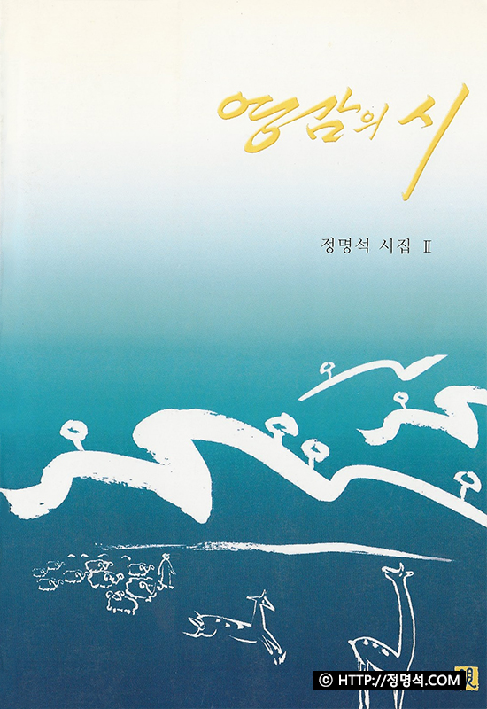

<section id="gtco-welcome" class="bg-white section-padding">
    <div class="container">
        <div class="section-content">
            <div class="row">
                <div class="col-sm-5 img-bg d-flex shadow align-items-center justify-content-center justify-content-md-end img-2" style="background-image: url(../assets/img/jeongmeyongseok.jpg);">

                </div>
                <div class="col-sm-7 py-5 pl-md-0 pl-4">
                    <div class="heading-section pl-lg-5 ml-md-5">
                            <span class="subheading">
                                자세히
                            </span>
                        <h2>
                            시인 정명석
                        </h2>
                    </div>
                    <div class="pl-lg-5 ml-md-5">
                        <p>정명석 시인은 1945년 충남 금산군 진산면 석막리에서 출생했다. <br>1995년 월간 <문예사조>로 등단하여 지금까지 문학 및 다양한 예술 활동을 펼쳐 왔으며, 50여 년간 성경 연구를 지속해 오면서 현제 기독교복음선교회 총회장과 국제문화예술평화협회 총재를 역임하고 있다. <br>주요 저서로는 <구원의 말씀>, 설교집 <생명의 말씀>, 잠언집 <하늘말 내말> 1~9집, <영감의 시> 1~4집 등이 있으며, 한국 시 문학 100년사를 총망라한 <한국시 대사전> (2011)에 그의 시 10편이 등재되었다. <br>예술 활동으로 국내 및 국외(영국, 프랑스, 독일, 아르헨티나 등>에서 그림과 서예 작품 다수를 전시했다.</p>
                        <h3 class="mt-5">정명석 집필 시집</h3>
                        <div class="row">
                            <div class="col-4">
                                <a href="#" class="thumb-menu">
                                    
                                    <h6>시로 말한다</h6>
                                </a>
                            </div>
                            <div class="col-4">
                                <a href="#" class="thumb-menu">
                                    
                                    <h6>시의 여인</h6>
                                </a>
                            </div>
                            <div class="col-4">
                                <a href="#" class="thumb-menu">
                                    
                                    <h6>영감의 시 2</h6>
                                </a>
                            </div>
                        </div>
                    </div>
                </div>
            </div>
        </div>
    </div>
</section>